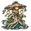
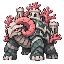

ของใหม่
อัปเดตล่าสุดของ Binder Town อ่านจากไฟล์เกม build 20261115-211516 (15 พ.ย. 2569) — คลาส 2 · แผนที่ใหม่ · มอนและการ์ดใหม่ 64 ใบ · Field Boss / World Boss ใหม่ · Unique ใหม่ · ระบบใหม่
คลาส 2 · 14 สาย อาชีพละ 2 สาย
Base Lv 99 + Job 50 เลือกสายที่หน้าสกิล แท็บคลาส 2 · สายแรกฟรี เปลี่ยนสายใช้ตั๋ว 250 Gems · Job Lv คลาส 2 สูงสุด 70 · แต้มคลาส 2 สูงสุด 70 (ครบ 20 แต้มในสายย่อยได้ Mastery) · สายสืบทอด = ต่อยอดสกิลคลาส 1 · สายใหม่ = สกิลกดคลาส 1 ใช้ไม่ได้ (Passive/Mastery ยังทำงาน) · Ultimate ยังปิด (รอ Raid)
ปราการของทีม ยิ่งใหญ่และไว้ใจได้
สายย่อย: Lionheart · Sanctum · Halo Guard
ดาบ 1 มือ + โล่ · VIT/STR · โล่ Bulwark
SpellbreakerKnight · สายใหม่อัศวินข้ามมิติ · ไม่ถือโล่ ไม่ยืนรับ วาร์ปไปโผล่ข้างเป้าทุกสกิล
สายย่อย: Nullblade · Riftward · Reflect
Runeblade / ดาบ (เวท) ไม่ถือโล่ · STR/INT · Null Charge
CleaverWarrior · สายสืบทอดนักรบฟันทำลายที่หนักแน่นและดุดันกว่าเดิม
สายย่อย: Warlord · Butcher · Ironblood
ขวาน / ดาบ 2 มือ · STR/VIT · Rage
DuelistWarrior · สายใหม่นักดาบดวล · เบา เร็ว ตัวต่อตัว ยิ่งไม่โดนตียิ่งแรง
สายย่อย: Rapier · Counterstance · Execution Line
ดาบ 1 มือ มือรองว่าง · AGI/LUK · Focus
MarkbowScout · สายสืบทอดยอดนักธนูที่มุ่งมั่นกับการล่าเป้าหมาย
สายย่อย: Deadeye · Volley · Ranger
ธนู + Quiver · DEX/LUK · Hunter's Mark
TrapperScout · สายใหม่ผู้เตรียมสนามและกำหนดเส้นทางของการล่า
สายย่อย: Demolition · Siege · Snare
หน้าไม้ 2 มือ · DEX/INT · กับดักบนพื้น
DuskRogue · สายสืบทอดนักสังหารแห่งเงาที่ลึกลับและเฉียบคม
สายย่อย: Eclipse · Shade · Veil
มีดคู่ · AGI/LUK · Combo
VenombladeRogue · สายใหม่นักพิษ · แตะแล้วเดินผ่าน ปล่อยพิษฆ่าแทน พิษลามเองเมื่อมอนตาย
สายย่อย: Venomcraft · Plague · Fang
Kris · AGI/DEX · พิษบนตัวมอน (ไม่หายเอง)
ScribeMage · สายสืบทอดจอมเวทนักปราชญ์ เชี่ยวชาญคัมภีร์และอักขระ
สายย่อย: Glyph · Frostscript · Archive
Tome · INT/DEX · Chill + หน้าคัมภีร์
StormcallerMage · สายใหม่ร่างพายุ · จอมเวทที่ไม่ร่าย พุ่งเข้าไปสู้กลางฝูง
สายย่อย: Lightning · Tempest · Thunder
Staff / Orb · INT/DEX · ของร่ายเร็วของ Mage ใช้ต่อได้
DawnAcolyte · สายสืบทอดแสงแห่งความหวังที่คอยประคองผู้อื่น
สายย่อย: Sunlight · Grace · Seraph
Rod · INT/VIT · Atonement
InquisitorAcolyte · สายใหม่ผู้พิพากษาที่ใช้อำนาจศักดิ์สิทธิ์อย่างเคร่งขรึม
สายย่อย: Verdict · Pyre · Iron Faith
Mace + Ward · INT/VIT · บาปบนตัวมอน
HerdSummoner · สายสืบทอดผู้ดูแลและบัญชาการกองวิญญาณ
สายย่อย: Pack · Stampede · Totem
Staff · INT/VIT · Thrall
ReaperSummoner · สายใหม่นักฆ่าถือเคียว พุ่งเข้าออกไม่หยุด ฟันด้วย ATK+MATK เสริมด้วยเวทมืดนิดหน่อย
สายย่อย: Scythe · Shadow · Dark Arts
Scythe (ใหม่) · STR+INT เท่ากัน / AGI · วิญญาณในตัว
กดที่การ์ดเพื่อเปิดหน้า Skill Tree แล้วเลือกอาชีพ ดูสกิลทุกตัวของแต่ละสาย
แผนที่ใหม่ · Nacreon ตะวันตก 10 แผนที่ · Lv 113–128
เข้าได้เมื่อพลังผนึกถึงค่าที่แผนที่ต้องการ (ถ้าไม่ถึง มอนตีแรงขึ้น) · กดที่มอนเพื่อดูการ์ด
Moonpool Gardens Lv 113–116 · พลังผนึก 0


Brinewick Saltworks Lv 115–118 · พลังผนึก 0


The Inverted Sea Lv 117–120 · พลังผนึก 40


Tidepool Terraces Lv 119–122 · พลังผนึก 70


Pearlgrave Trench Lv 120–123 · พลังผนึก 110


Tidemill Expanse Lv 121–124 · พลังผนึก 150


Gullrock Rookery Lv 122–125 · พลังผนึก 190


Leviathan Spine Lv 123–126 · พลังผนึก 230


Bellglass Cathedral Lv 124–127 · พลังผนึก 280


Kelpgate Locks Lv 125–128 · พลังผนึก 330


Field Boss ใหม่ · 10 ตัว
เกิดใน Lair ของแต่ละแผนที่ (Channel PvP) · ★ = ระดับความยาก · การ์ด Load 5
 Anchorjaw WreckmawLv 102 · Keelbreak Cove · ★
Anchorjaw WreckmawLv 102 · Keelbreak Cove · ★เมื่อโจมตีโดน (12%): สมอทุบเป้าเพิ่ม 100% ของดาเมจครั้งนั้น + สตัน 1 วิ (Boss / Mini-boss ไม่โดนสตัน) · ลดดาเมจที่ได้รับ 8.8%

Lanternwake MatronLv 104 · Ricewater Shrine · ★★เมื่อสังหารมอน: ตัวเองและปาร์ตี้ในระยะ 8 ช่องฟื้น MP 8% (ทุก 12 วิ) · MATK +8.8%

Coralhorn BastionLv 106 · Coralhorn Shelf · ★★เมื่อโดนดาเมจ: หนามปะการังแทงมอนรอบตัว 3 ช่อง 10% ของ Max HP คุณ (ทุก 3 วิ) · เมื่อโดนดาเมจ (12%): ลดดาเมจที่ได้รับ 25% นาน 4 วิ
Drowned MagistrateLv 108 · Magistrate's Basin · ★★★★เมื่อโจมตีโดนมอนที่ HP < 30%: ตัดสินเพิ่ม 150% ของดาเมจครั้งนั้น (ทุก 10 วิ) · ดาเมจคริ +35%
Railstorm WyrmLv 110 · Thunderline Depot · ★★★เมื่อโจมตีโดน (12%): สปีดตี +20% และสปีดวิ่ง +15% นาน 4 วิ (ทุก 10 วิ) · สปีดตี +12.5%
 Kilnshell ColossusLv 113 · Searing Kilnyard · ★★★
Kilnshell ColossusLv 113 · Searing Kilnyard · ★★★เมื่อสังหารมอน: ได้โล่ 15% Max HP นาน 6 วิ (ทุก 10 วิ) · ATK +8.8%
ดรอป Unique: Kilnheart Amulet
 Saltwight ArchonLv 118 · Saltwight Pans · ★★★
Saltwight ArchonLv 118 · Saltwight Pans · ★★★เมื่อโดนดาเมจ (20%): มอนที่ตีคุณติดเกลือ ตรึง 1.5 วิ และโดนดาเมจแรงขึ้น +25% นาน 4 วิ (Boss / Mini-boss ไม่โดนตรึง) · ลดดาเมจที่ได้รับ 8.8%
ดรอป Unique: Saltwight Signet
 Mirrortide SirenLv 120 · Upturned Strand · ★★★★
Mirrortide SirenLv 120 · Upturned Strand · ★★★★เมื่อคริ (30%): มอนรอบเป้า 4 ช่องสโลว์ 40% และโดนดาเมจแรงขึ้น +8% นาน 3 วิ · MATK +8.8%
ดรอป Unique: Mirrortide Locket
Spinefall LeviathanLv 126 · Marrowfall Gorge · ★★★★★เมื่อโจมตีโดน Elite / Mini-boss / Boss (15%): กัดเพิ่ม 80% ของดาเมจครั้งนั้น ไม่สน DEF (ทุก 3 วิ) · ดาเมจใส่ Field Boss +29%
ดรอป Unique: Leviathan Girdle
 Kelpgate LockwardenLv 128 · Lockwarden's Sluice · ★★★★★
Kelpgate LockwardenLv 128 · Lockwarden's Sluice · ★★★★★เมื่อโดนดาเมจขณะ HP < 40%: ฟื้น 35% Max HP และล้างสโลว์ / ตรึง (ทุก 60 วิ) · ดูดเลือด 4.4% ของดาเมจกายภาพ
ดรอป Unique: Lockwarden's Key
World Boss ใหม่ · Pearlheart Titan Lv 130
ท่าพิเศษ Rising Tide: น้ำขึ้น Rising Tide ท่วมเกาะ — ขึ้นไปยืนบนหินหอย (วงสีฟ้า) ก่อนน้ำมาถึง อยู่ข้างนอกโดน 60% ของ HP สูงสุด
ดรอป Unique ประจำอาชีพ 7 ชิ้น (ผูกตัว) · ดูด้านล่าง
Unique ใหม่ · 12 ชิ้น
ค่าคงที่ + Affix สุ่ม 2–4 บรรทัด · เลือกใส่ได้ที่หน้า ออฟชั่นอุปกรณ์
 Saltwight SignetSaltwight Archon (Field Boss) · ATK 96
Saltwight SignetSaltwight Archon (Field Boss) · ATK 96+4% ATK · +6% สปีดวิ่ง · +15 FLEE · ★ Salt Brand: ตีมอนตัวที่ยังไม่เคยโดนคุณตีครั้งแรกแรงขึ้น 30%
ทุกอาชีพสายตี — ตีมอนตัวใหม่ครั้งแรกแรงขึ้น ฟาร์มไว
+324 Max HP · +162 Max MP · +8% ทนสตัน (คลาส 2) · +4 ลดดาเมจจากบอส · +5% Max HP · ★ Mirror Ward: กันการควบคุม (Stun / Fear / Root) ได้ 1 ครั้ง ทุก 20 วิ
ทุกอาชีพ PvP / บอส — กันการควบคุมได้ 1 ครั้งเป็นระยะ
 Leviathan GirdleSpinefall Leviathan (Field Boss) · DEF 33
Leviathan GirdleSpinefall Leviathan (Field Boss) · DEF 33+153 Max HP · +5% กันดาเมจวง (คลาส 2) · +5 โอกาสบล็อก · +5% สปีดวิ่ง · ★ Spine Guard: โดนตีครั้งเดียวเกิน 20% ของ HP สูงสุด ดาเมจครั้งนั้นลด 50% (ทุก 30 วิ)
แทงก์ / ทุกอาชีพที่ตายง่าย — โดนตีหนักทีเดียว ลดครึ่ง
 Lockwarden's KeyKelpgate Lockwarden (Field Boss)
Lockwarden's KeyKelpgate Lockwarden (Field Boss)+4% คริ · +4% Max HP · +5% สปีดวิ่ง · +5 castSpd · ★ Long Watch: อาหารและบัฟจากไอเทมอยู่นานขึ้น 20%
ทุกอาชีพ ฟาร์มนาน — อาหารและบัฟจากไอเทมอยู่นานขึ้น
 Kilnheart AmuletKilnshell Colossus (Field Boss) · MATK 96
Kilnheart AmuletKilnshell Colossus (Field Boss) · MATK 96+4% MATK · +6% ทนสตัน (คลาส 2) · +4% Max HP · ★ Kiln Temper: พลังผนึกไม่ถึงที่แผนที่ต้องการ → ส่วนที่มอนตีแรงขึ้นลดลง 50%
ทุกอาชีพที่บุกแผนที่ตะวันตกเกินพลังผนึก — มอนตีแรงขึ้นน้อยลง
+765 Max HP · +5 โอกาสบล็อก · +8% ทนสตัน (คลาส 2) · +3% ดูดเลือด · ★ Bound Bastion: บล็อกได้ ฟื้น HP 1% ของ HP สูงสุด
Knight — บล็อกได้ ฟื้น HP
 Titan's Knuckle RingPearlheart Titan (World Boss) · ATK 96
Titan's Knuckle RingPearlheart Titan (World Boss) · ATK 96+5% ATK · +8% ทนสตัน (คลาส 2) · +5% Max HP · ★ Titan's Fury: ยิ่ง HP ต่ำยิ่งตีแรง สูงสุด +15% ตอน HP ใกล้หมด
Warrior — ยิ่ง HP ต่ำยิ่งตีแรง
 Pearlsight HoodPearlheart Titan (World Boss) · DEF 99
Pearlsight HoodPearlheart Titan (World Boss) · DEF 99+14 HIT · +6% Armor Pierce · +5% สปีดวิ่ง · +4% ลดคูลดาวน์ · ★ Pearlsight: ตีมอนที่กำลังไล่ตีคนอื่นอยู่ แรงขึ้น 12%
Scout — ยิงเป้าที่กำลังไล่ตีคนอื่นแรงขึ้น
 Hollowstep BootsPearlheart Titan (World Boss) · DEF 60
Hollowstep BootsPearlheart Titan (World Boss) · DEF 60+8 FLEE · +4% สปีดวิ่ง · +5% คริ · +8% ดาเมจคริ · +5% สปีดตี · ★ Hollow Step: Dash แล้วทิ้งเงา การตีครั้งถัดไปที่โดนภายใน 3 วิ พลาด
Rogue — Dash ทิ้งเงา หลบการตีครั้งถัดไป
+306 Max MP · +6 castSpd · +6% Spell Amp · +4% ลดคูลดาวน์ · ★ Quiet Stars: โดนตีระหว่างร่าย ดาเมจครั้งนั้นลด 40% (ทุก 15 วิ)
Mage — โดนตีระหว่างร่าย ลดดาเมจครั้งนั้น
 Choirheart MantlePearlheart Titan (World Boss) · DEF 108
Choirheart MantlePearlheart Titan (World Boss) · DEF 108+414 Max MP · +5% ลดคูลดาวน์ · +8% ทนสตัน (คลาส 2) · +5 castSpd · ★ Choirheart: ฮีลเกิน HP เต็ม ส่วนเกิน 30% กลายเป็นโล่
Acolyte — ฮีลเกิน HP เต็ม ส่วนเกินกลายเป็นโล่
 Pearlheart PhylacteryPearlheart Titan (World Boss)
Pearlheart PhylacteryPearlheart Titan (World Boss)+324 Max HP · +162 Max MP · +5% MATK · +5% Max HP · +5 castSpd · ★ Pearl Phylactery: วิญญาณที่เรียกออกมาใหม่ HP สูงสุดเพิ่ม 20%
Summoner — วิญญาณที่เรียกใหม่ทนขึ้น
ระบบใหม่
- เฉียด (Graze): ท่ามอน เวท และสกิลวงที่หลบไม่ได้ มีโอกาสโดนแค่ครึ่ง · คำอธิบาย HIT / FLEE ในเกมเขียนใหม่
- ทนสตัน (Tenacity): สเตตัสใหม่ คลาส 2 เท่านั้น — โดนสตัน ตรึง กลัว จากผู้เล่นสั้นลง (เต็ม 60%)
- กันดาเมจวง (Area Resist): สเตตัสใหม่ คลาส 2 เท่านั้น — โดนสกิลวงของผู้เล่นเบาลง (เต็ม 50%)
- พลังผนึก: ค่าที่ต้องมีเพื่อเข้าแผนที่ Nacreon ตะวันตก (0 → 330) · ไม่ถึง = มอนตีแรงขึ้น
- ตั๋วเปลี่ยนสายคลาส 2: 250 Gems (สายแรกฟรี) · เปลี่ยนสาย = แต้มคลาส 2 คืนทั้งหมด
- ตัวละครคลาส 2 เป็นภาพพิกเซลตัวใหญ่เท่าชุดแฟชั่น · แสงตีบวกคลาส 2 เรืองที่อาวุธ (บางสาย)
- Ultimate คลาส 2 มีในไฟล์แล้ว แต่ยังปิด รอระบบ Raid